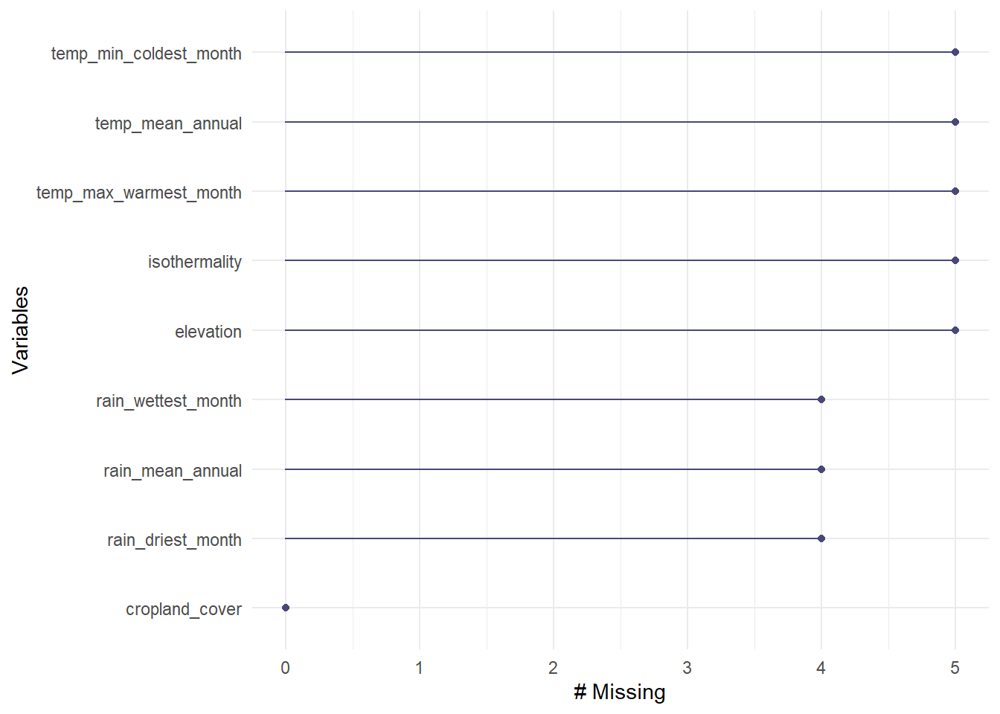
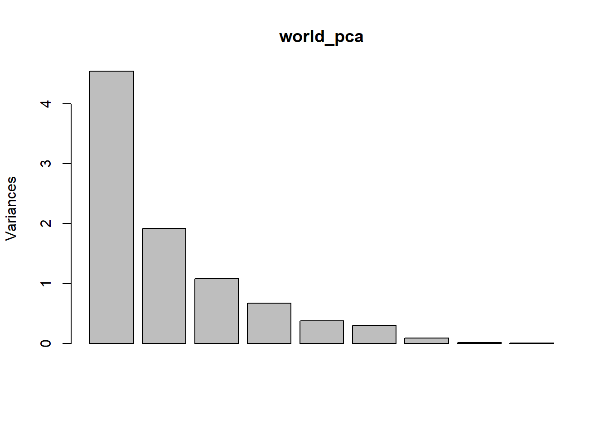
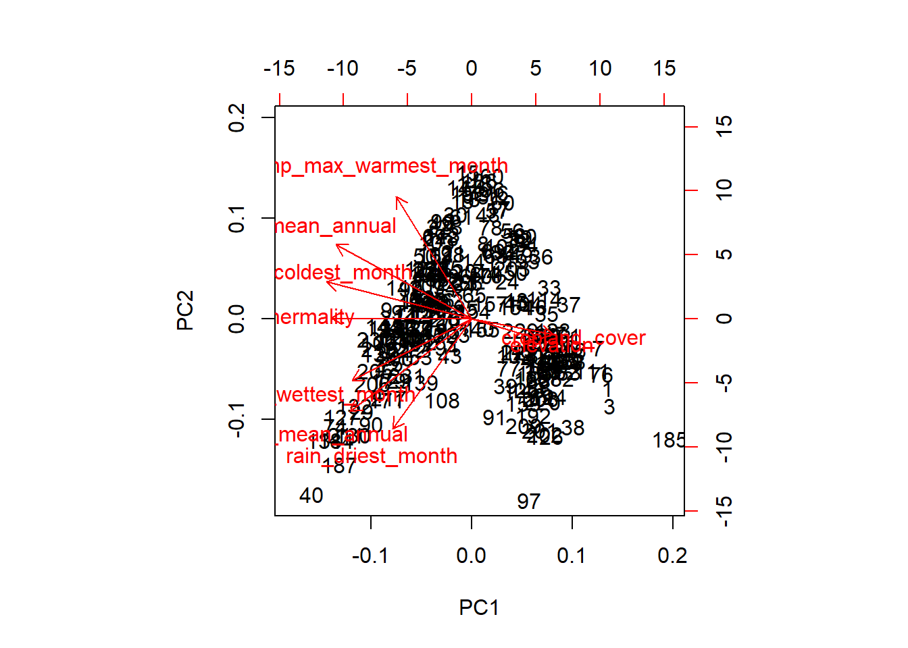

knitr::opts_chunk$set(echo = TRUE,
message = FALSE,
warning = FALSE)
#attach packages
library(tidyverse)
library(janitor)
library(here)
library(kableExtra)
library(sf)
library(naniar)
library(ggfortify)
library(lubridate)
library(data.table)
library(DT)
library(gridExtra)
library(knitr)This data set was created by @zander_venter and was acquired through the Google Earth Engine [1], it is a data set that examines various environmental and climactic variables on a country level. For this analysis, we are looking specifically at the data related to cropland cover and climatic variables related to weather (namely precipitaion and temperature). In order to find which variables were associated with the amount of cropland that was present in a country, a primary component analysis was conducted.
#starting off with loading in the necessary data frames
world_env <- read_csv(here::here("data","world_env_vars.csv")) %>%
clean_names()
#remove antarctica which has all NA values
world_env <- world_env[-4, ]#now time to run the pca analysis, see if we can find something interesting, first will create the data subset to do that
world_sub <- world_env %>%
select(cropland_cover, temp_mean_annual, temp_max_warmest_month,
temp_min_coldest_month, rain_mean_annual, rain_driest_month,
rain_wettest_month, elevation, isothermality)
#now time to run the PCa analysis
#pca_world <- prcomp(world_sub, scale=TRUE) was #'d out because it was resulting in an error
#got an error, will explore where
gg_miss_var(world_sub)
#will use tidyr::drop_na() to allow for analysis
world_nona <- world_sub %>%
drop_na()
#only 9 rows removed, so data set is still fairly large and intact to allow for the analysis#now that the data is tidy, time to run the pca analysis
world_pca <- prcomp(world_nona, scale= TRUE)
#look at the pca analysis
summary(world_pca)## Importance of components:
## PC1 PC2 PC3 PC4 PC5 PC6 PC7
## Standard deviation 2.1325 1.3856 1.0409 0.81762 0.61524 0.54471 0.2970
## Proportion of Variance 0.5053 0.2133 0.1204 0.07428 0.04206 0.03297 0.0098
## Cumulative Proportion 0.5053 0.7186 0.8390 0.91325 0.95531 0.98828 0.9981
## PC8 PC9
## Standard deviation 0.11933 0.05541
## Proportion of Variance 0.00158 0.00034
## Cumulative Proportion 0.99966 1.00000plot(world_pca)
#yay last part which is creating a bi plot for this data
biplot(world_pca)
#nope that is very ugly, will clean this up using ggfortifyAn image of rice paddies in S.E. Asia.
Figure 1: Principal component analysis (PCA) of environmental and climactic variables. The axes of the PCA explain 71.86% of the variance present in the data set. The length of each line indicates the variance described by that value (longer length = greater variance) while the angle between two lines details how correlated the variables are (0 degrees is a correlation of 1, 90 degress is a correlation of 0, 180 degrees is a correlation of -1.)
Elevation and cropland cover are highly correlated, indicating that countries with a more mountainous terrain (higher elevation) have less available arable land for crop production.
Cropland cover and elevation were also negatively correlated with mean annual temperatures and the coldest monthly temperatures. While not surprising that cold weather and average temperatures are negatively correlated with cropland cover, elevation was surprising as areas high in elevation tend to have cooler weather.
Precipitation variables (mean annual rainfall, driest month, and wettest month) all seemed to have very little to no correlation with the amount of cropland cover, which is surprising given that typically rainfall can be very beneficial to agricultural systems.